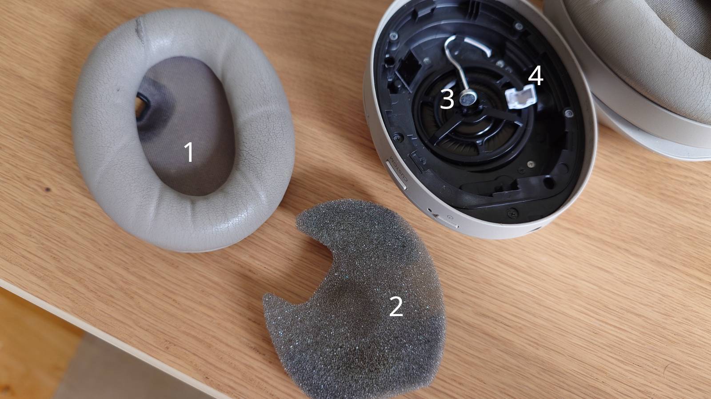
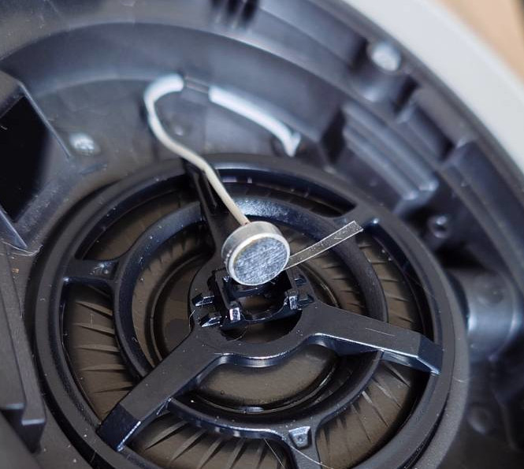

WH1000-XM4 Noise fix
After three years of dedicated service, my Sony WH1000-XM4 headset started making odd noises in the left ear cup. It only occurred when the ANC was enabled, and seemed to be related to head movement or when the headset slips back and forth over the ear. The sound was a sort of clicking, clucking noise with some whistling components.
Solutions online
Several other people have reported noise issues with the XM4, but none of their descriptions match my problem and their suggested fixes did not seem to work for me.
I found online and tried the following methods to remediate the issue:
- Make sure there is no condensation inside the ear cup
- Ensure that the two wires of the internal ANC microphone are clearly separated from each other
- Ensure that the ear cup itself is properly attached and seals against the headset body
Another potential cause is that the microphone itself is damaged and needs to be replaced.
This thread on iFixit suggests that the microphone's own mesh can be the cause of the issue, and that removing it may help. Other suggested solutions are to move the microphone to a different position inside the ear cup.
My solution
For me, two changes combined made the problem go away: cleaning sweaty/dirty parts and making sure the microphone is firmly mounted. For some great instructions on disassembly of both sides of the headset, please take a look at iFixit's guide.
Cleaning
Clean the parts around the microphone which are exposed to ear gunk:
- Ear cup mesh
- The foam insert
- The mesh on the front of the internal microphone itself
- The rubber dome covering the microphone

I used cotton swabs and isopropyl alcohol, gently rubbing and then letting the parts air dry
This cleaning on its own was not enough to solve the problem, so this probably wasn't the issue.
Mounting the microphone firmly
The internal microphone was noticably loose in its cradle, and could move a fraction of a mm when shaken/jostled. To prevent this, I cut a thin strip of tape and wrapped it around the edge of the microphone until it had a more snug fit in the plastic frame.

Be very careful when handling the microphone, as it is quite sensitive. Also make sure your tape doesn't reach in front of the microphone, as that can interfere with its operation.
In my case, 1.5 wraps of tape was enough to make it stop moving on its own.
After reassembling, the noise problem has been reduced. It still reoccurs on occasion, and appears to be related to movement of the headphones (typically synced with my footsteps).
Pressing gently on the microphone bump inside the ear cup can sometimes make the noise go away, but I don't recommend getting used to this as a solution. The motion sensitivity suggests again that this is related to a loose microphone.
Other observations
While testing this solution, I accidentally left tape sticking out in front of the microphone, and forgot to add the foam insert when reassembling the ear cup. This led to a very loud squealing noise which hadn't been there before. The same happens on the other (functioning) side if I take the foam insert out. It seems that if the ear forms a cup around the microphone, the result is this ear-piercing shriek.
Re-applying the tape more carefully and including the foam insert made the squealing go away.
This suggests to me that a malfunctioning microphone or interference with it (covered, dirty, misaligned) can be the cause of these problems as well.
It also suggests that a broken/damaged foam insert could be a part of the problem; even when the microphone works perfectly (as my right-side did), interfering with the foam insert can still cause feedback in the ANC.
If the fix above doesn't work for you, I would suggest looking at other potential problems related to this internal microphone.
- Is the cable damaged?
- Is the black plastic mount damaged?
- Is the microphone itself damaged?
- Is the rubber dome damaged or missing?